Equity and fairness considerations
EPIB 676 session 18, McGill University
2023-11-02
Today
Equity in health technology assessment policies
Methods for decision-analytic modelers
Dimensions of concern for health equity?
Dimensions of concern for health equity?
Health, wealth, race and ethnicity, sex, gender identity, sexual orientation, age, (dis)ability, socioeconomic status, neighborhood…
Intersectionality
Health system perspective on equity
Portfolio of services may be viewed as unfair if:
Provides unequal benefit
Creates unequal access
Worsens existing inequities in health outcomes
Fairness/equity criteria can conflict with efficiency and each other!
Lorenz curve
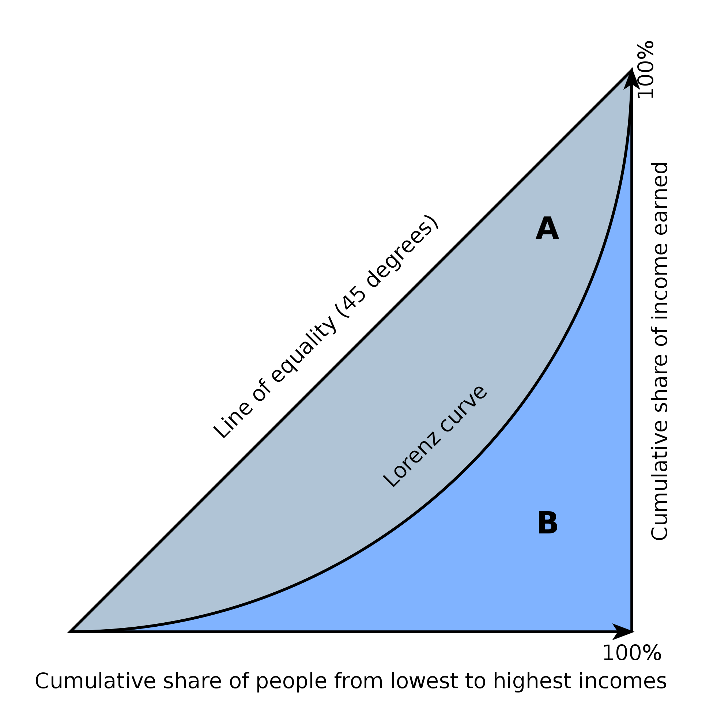
Analyzes distribution of wealth (or health) in population
GINI coefficient: A/(A+B)
Basis for several measures of equity
Lorenz curve for longevity
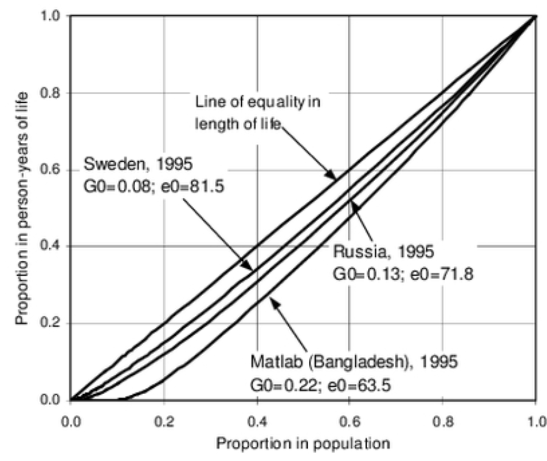The traditional CEA approach
Maximize total health benefit with limited funds
No consideration for distribution of benefits across population
“A QALY is a QALY is a QALY”
Some decision-making bodies disagree
Norway’s 3 criteria for health technology assessment
Health-benefit: prioritize interventions with greater expected health benefit (and other relevant welfare benefits)
Resource: prioritize interventions that requires fewer resources
Health loss: prioritize interventions for populations with a greater expected lifetime health loss in the absence of such an intervention.
Norway’s health-loss criterion categorizations
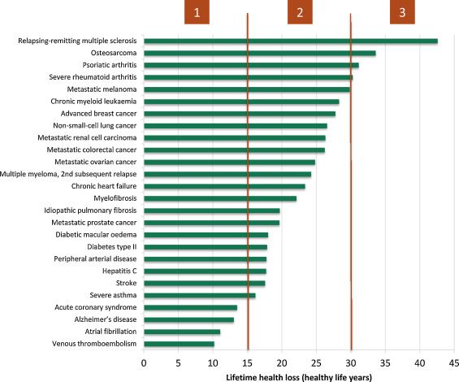‘Staircase’ cost-effectiveness thresholds
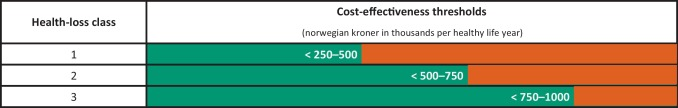Dutch Proportional shortfall
For a disease
\[ \text{Proportional shortfall}=\frac{\text{Disease-related QALY loss}}{\text{Expeted QALYs without disease}} \]
For a treatment
\[ \text{Proportional shortfall}=1-\frac{\text{Expected QALYs without treatment}}{\text{Expected QALYs without disease}} \]
UK proportional shortfall (proposed)
Prioritize interventions for those with severe disease
Absolute shortfall: QALYs without disease - QALYs with disease
Proportional shortfall: [Absolute shortfall] / [QALYs without disease]
Challenges with these approaches
Usually used to decide whether to add drugs/technology to formulary, not individual patient decisions
Same intervention, once approved, used for patients with differing severity
Assigning patient population to severity group challenging
- Severity-adjusted probability cost-effective could help
Do we consider age?
- Individual patient age not considered; average patient age is implicit
Public support for severity-adjusted thresholds mixed

Today
Equity in health technology assessment policies
Methods for decision-analytic modelers
Incorporating equity
Four types:
Equity evidence review
Equity constraint analysis
Equity distribution analysis
Equity trade-off analysis
Mirelman (2015) Methods for incorporating health equity impacts in economic evaluation with applications to low and middle income countries
Equity evidence review
What are the equity issues?
What is known about them?
What do stakeholders think?
Pro: does not require quantification of inequity
Con: less clear guidance for decision (& depends on available data)
Equity constraint analysis
- How much benefit is foregone if the most cost-effective option is ruled out on equity grounds?
Pro: flexible because ‘equity grounds’ not defined
Con: no explicit quantification of inequity. Only addresses 1/2 of equity-efficiency trade-off
Equity distribution analysis
- How much do subgroups gain and lose?
Pro: provides specific information on gains/losses by subgroup
Con: subgroup data that may be unavailable; no explicit valuing of equity-efficiency tradeoff
Equity trade-off analysis
- Which intervention optimally balances efficiency and equity?
Pro: articulates and applies clear decision criterion
Con: complex calculation; defining “optimal” equity-equity trade-off is challenging
Equity-efficiency plane
Standard economic evaluation
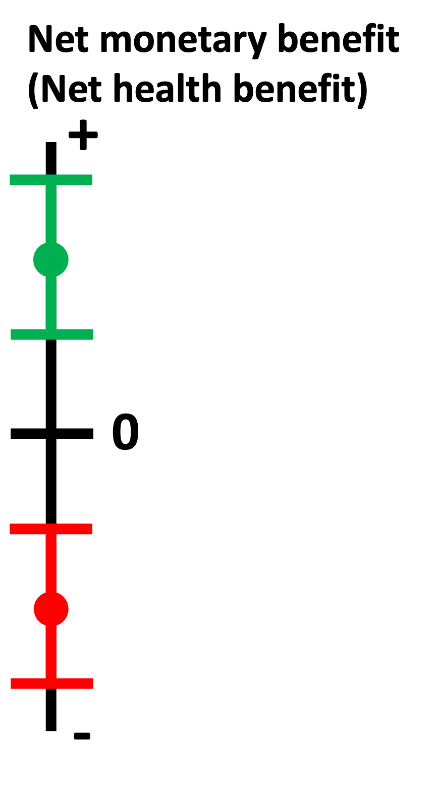Adding equity dimension
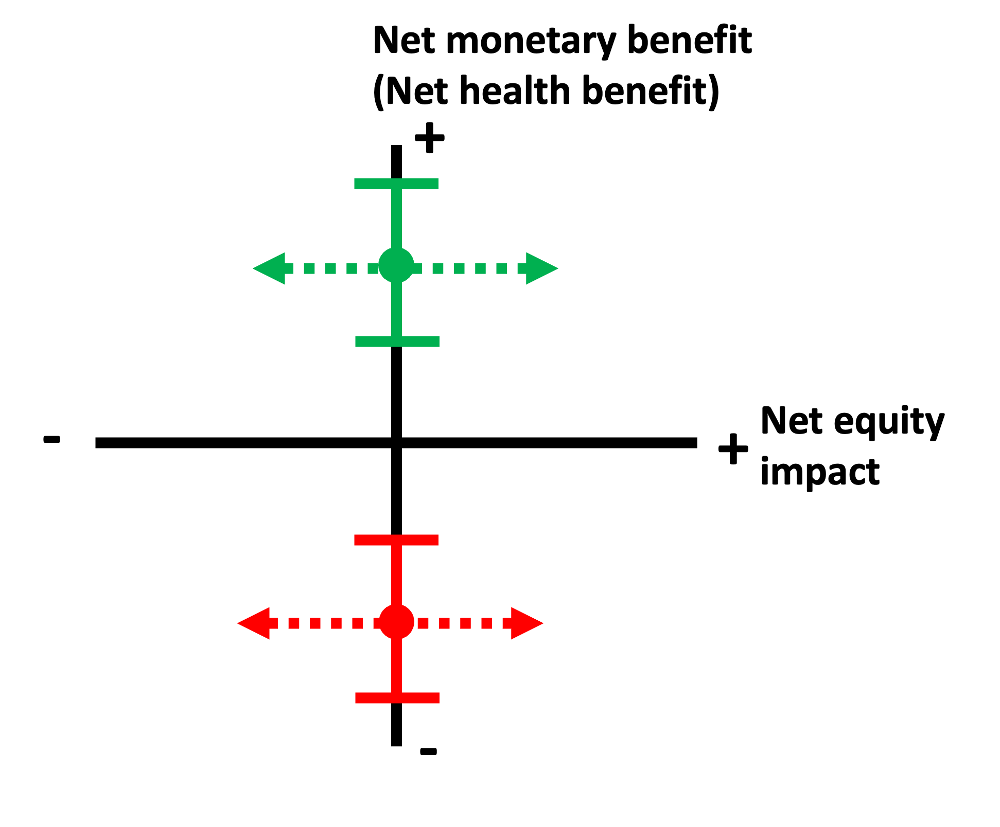Equity-efficiency trade off
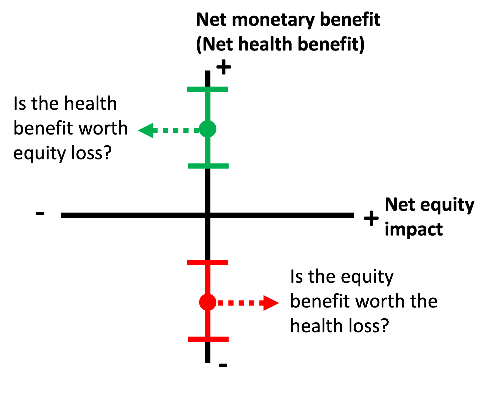Equity evidence review
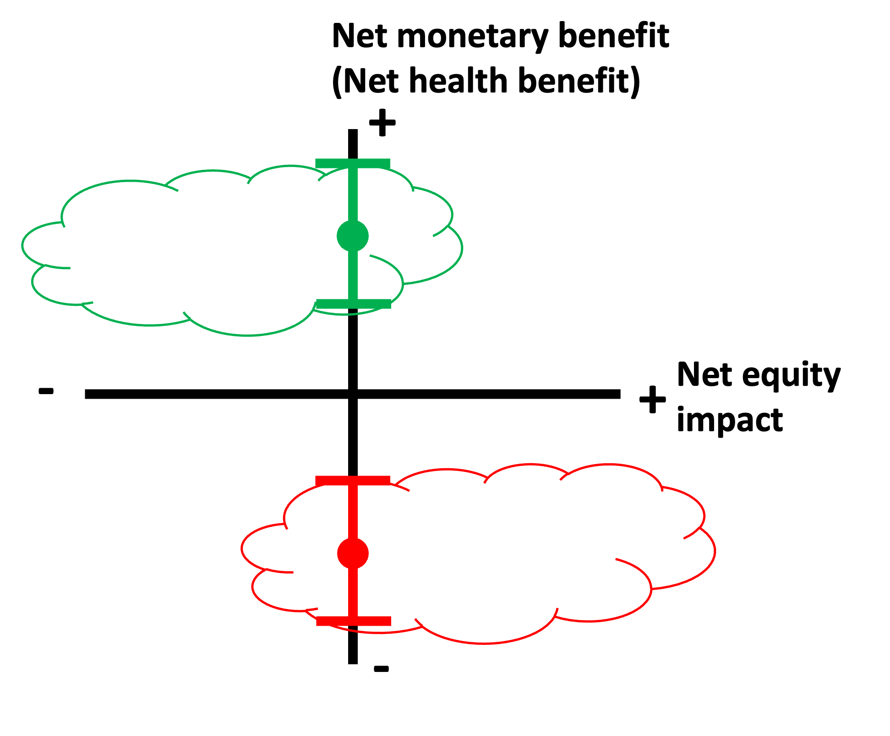Evidence review: premature neonates in India

Premature neonates in India

Equity constraint analysis
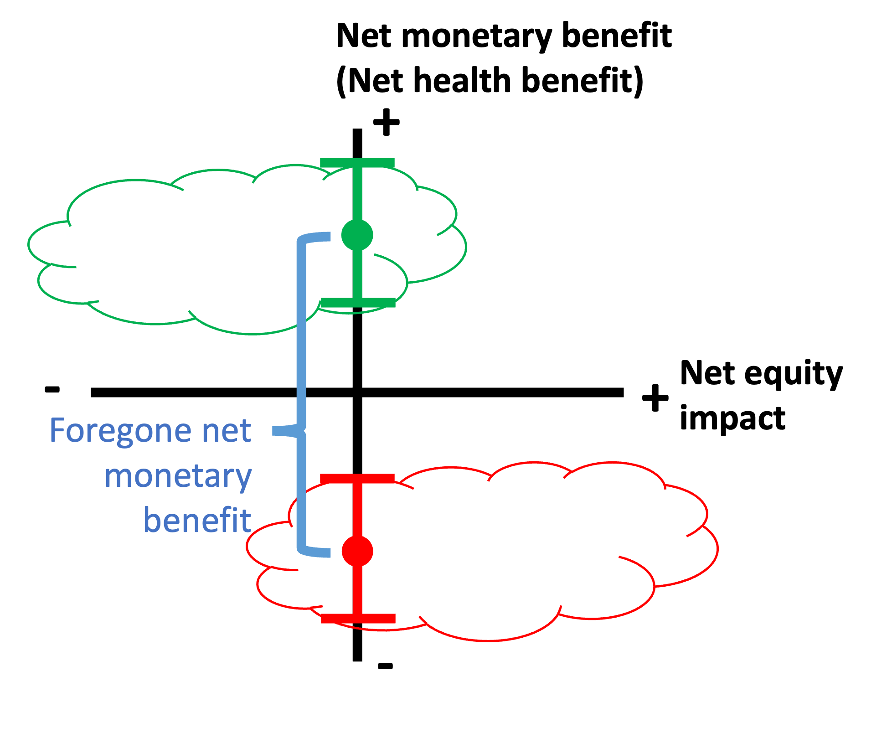Example of equity constraints
Cleary 2009 approach
HIV care can be “no-ART”, “first-line ART only”, or “first and second-line ART”
Decision-model + constrained optimization
For fixed budgets, maximized QALYs under constraints:
Equal treatment: everyone gets same treatment
Decent minimum: everyone gets some treatment
Health maximization: no constraint
Model structure
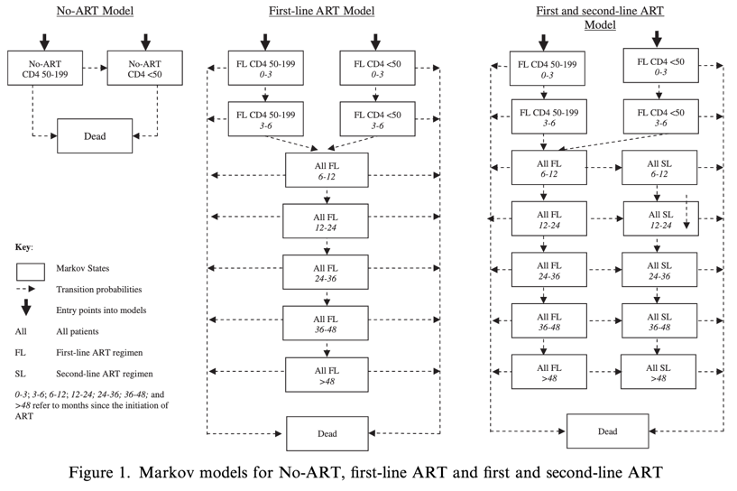Example of equity constraints
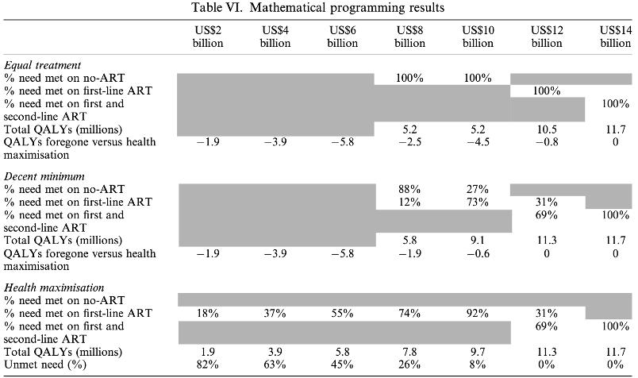Equity distributional analysis
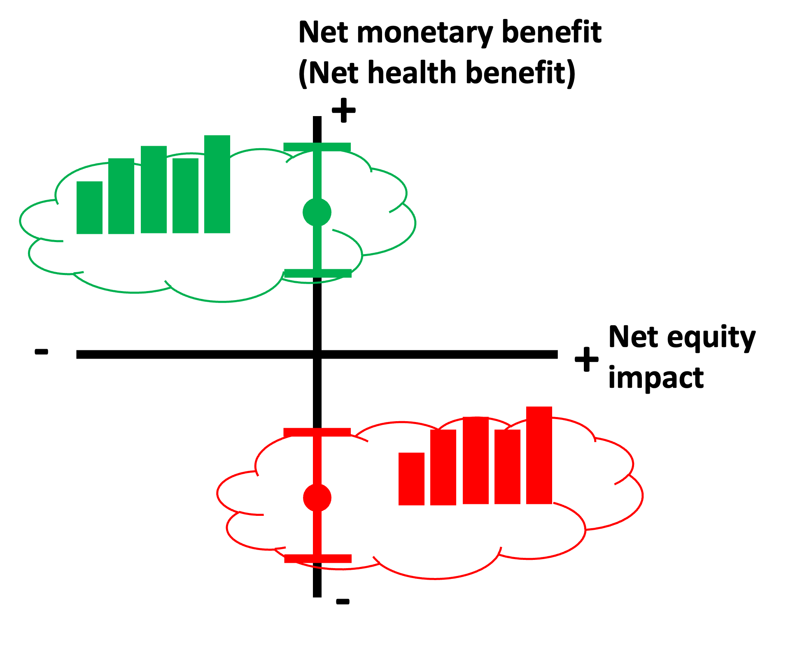Extended cost-effectiveness analysis
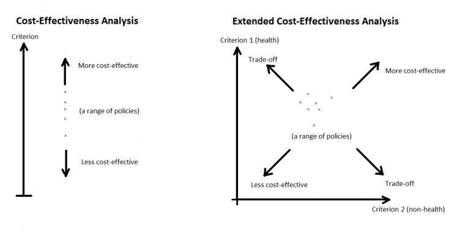ECEA motivation
In many countries, access to healthcare differs by wealth
Public system (partially) government funded, but limited offerings
Private system paid for out of pocket
Decisions to cover services will have different impacts on more or less wealthy people
Measures considered in ECEA
Estimate by subgroup (usually wealth-based)
Health gains: usually QALYs
Private (patient) expenditures averted: for health, direct non-medical costs, time, or productivity costs
Financial risk protection: will out-of-pocket costs lead to financial hardship?
- Depends on size of out-of-pocket-cost + income/wealth of patient
Extended cost-effectiveness analysis structure
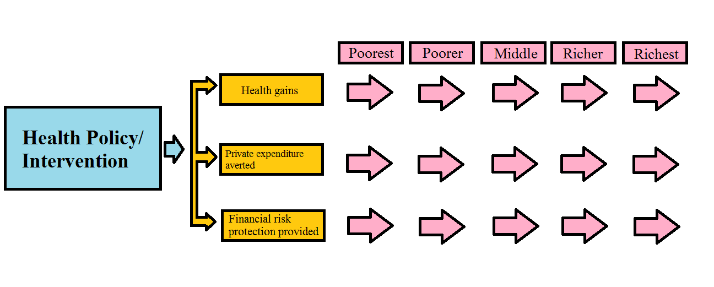ECEA: Tobacco tax in China

Equity trade-off analysis
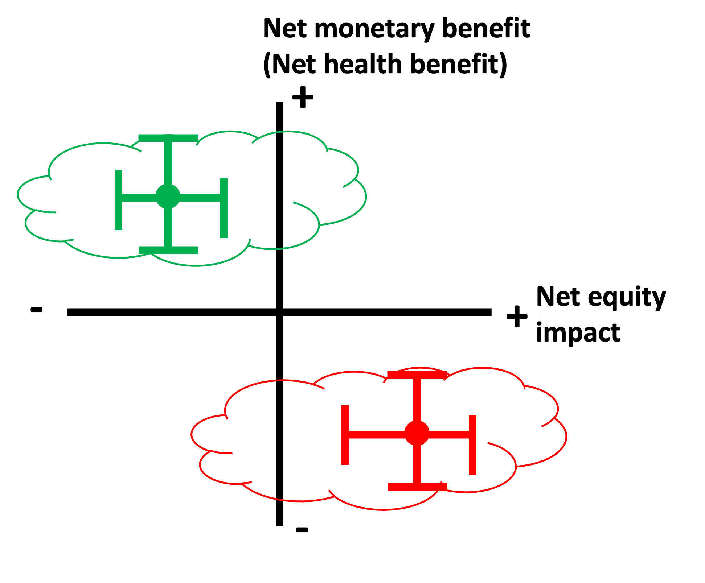DCEA: distributional cost-effectiveness
For health sector decisions with objective of reducing health inequities
Focuses on health benefits and opportunity costs assuming fixed health sector budget
Twin policy goals
Improve overall health
Reduce health inequities
Asaria et. al. 2016 Distributional cost-effectiveness: A tutorial
DCEA: Two stages
Model social distribution of health for each strategy
Evaluate social distributions of health
DCEA modeling stage
- Estimate the baseline health distribution
- Model changes due to interventions being compared, allowing for the distribution of opportunity costs from additional resource use
- Adjust the resulting modeled health distributions for alternative social value judgments about fair and unfair sources of health variation.
DCEA evaluation stage
Use the estimated distributions to quantify the change in total population health and unfair health inequality due to each intervention
Rank the interventions based on dominance criteria;
Analyze trade-offs between improving population health and reducing unfair health inequality, allowing for alternative specifications of the social welfare function.
Example application
NHS Bowel Cancer Screening Program: Every 2 years age 60 - 74, participants mail stool samples for fecal immunochemical testing.
Pilot data reveals variation in uptake by neighborhood social deprivation, sex, and ethnicity
Impact on morbidity and mortality estimated via modeling
Decision problem
Should we promote participation?
No screening
Status quo: no reminder
Targeted reminder: letter signed by GP + info packet to:
Most income-deprived neighborhoods (40%)
Neighborhoods with highest % from Indian subcontinent (20%)
Universal reminders: GP-endorsed letter to all patients
Baseline distribution of health
Measured in interpersonally-comparable ratio scale
Include full general population (resources used for strategy have opportunity cost for whole society)
Describe variation in health across multiple subgroups (correlation of dimensions)
- Dimensions with cost/benefit variation and or equtiy concerns
Baseline distribution of health
In cancer screening example:
Measured quality-adjusted life expectancy at birth
Subgroups defined by
Sex
Neighborhood deprivation quintile
Neighborhood ethnic diversity (% from Indian subcontinent)
Baseline distribution of health
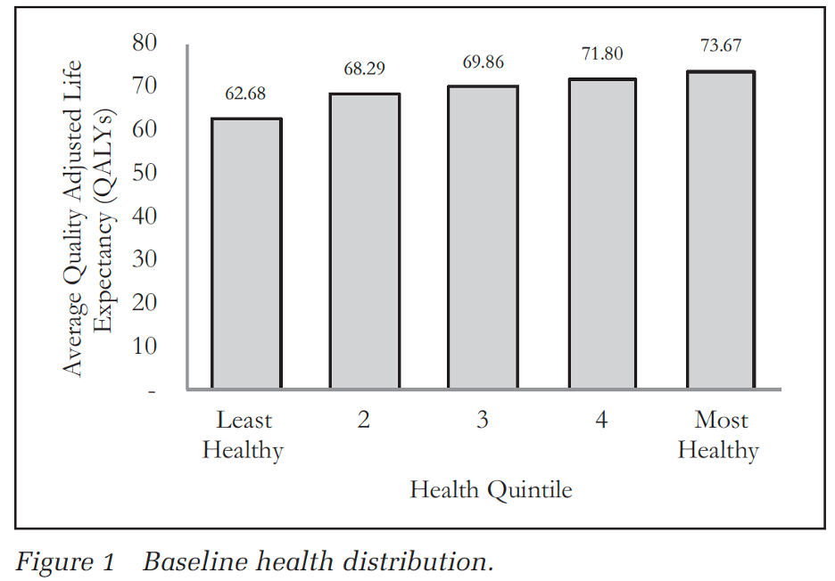Distribution of health changes
Difference in costs and effects of intervention in subgroups
Parameters can vary by subgroup
Disease prevalence, severity, mortality, natural history
Intervention uptake
Intervention direct costs
Intervention health effects
Opportunity costs from displaced activities
Other cause mortality
Distribution of health changes
Difference in costs and effects of intervention in subgroups
Parameters can vary by subgroup
Disease prevalence, severity, mortality, natural history
Intervention uptake
Intervention direct costs
Intervention health effects
Health opportunity costs from displaced activities1
Other cause mortality
Intervention uptake
No screen: None
Status quo: apply odds of participating from pilot study to status quo participation counts
Reminder scenarios: costs and effects from literature; assume equal for all subgroups
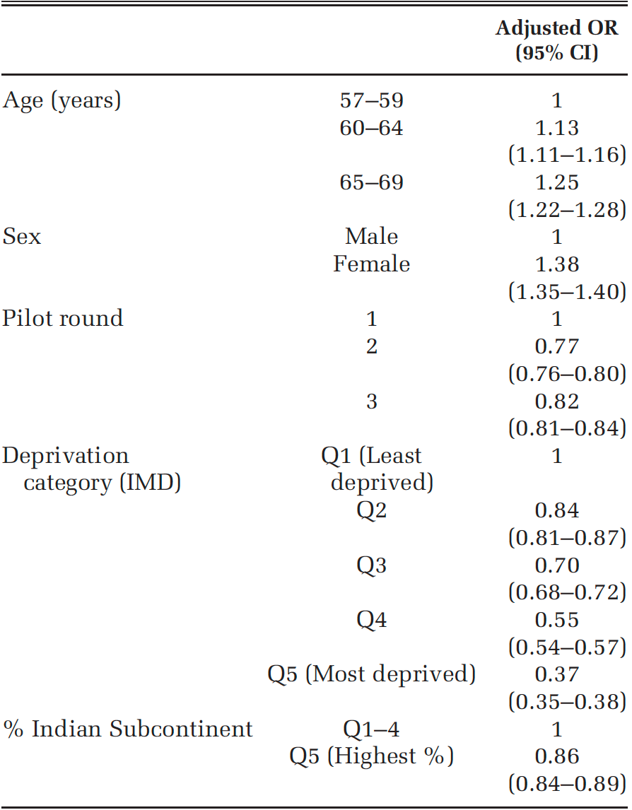
Intervention uptake
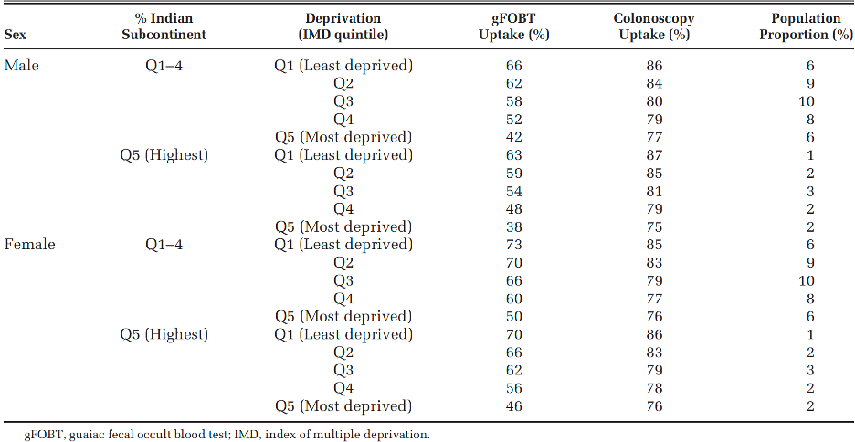Intervention health effects
Assume cancer incidence, costs, effects same in each subgroup
Compute quality-adjusted life expectancy (QALE) gains that factor in subgroup-specific other-cause mortality and quality-adjustments
Main differences come from differences in uptake
Health opportunity costs
Sum all costs
Convert to ‘Health opportunity cost’ in quality adjusted life years
- Divide costs by £20,000/QALY willingness-to-pay threshold
Base case: All subgroups benefit equally from opportunity cost
Extreme scenarios: all opportunity costs go to
Worst-off quintile
Best-off quintile
Net health gains by subgroup
Example calculation for Women in areas with low % from Indian subcontinent in deprivation quintile Q3
Total lifetime net present costs (all subgroups)
- £72 million
Health opportunity cost (all subgroup)
- £72 million/£20,000 per QALY = 3600 QALYs
% population this subgroup: 10%
- Allocated health opportuntiy cost: 360 QALYs
Net health gains = QALY gains from program minus 360 QALYs
QALE by subgroup by strategy
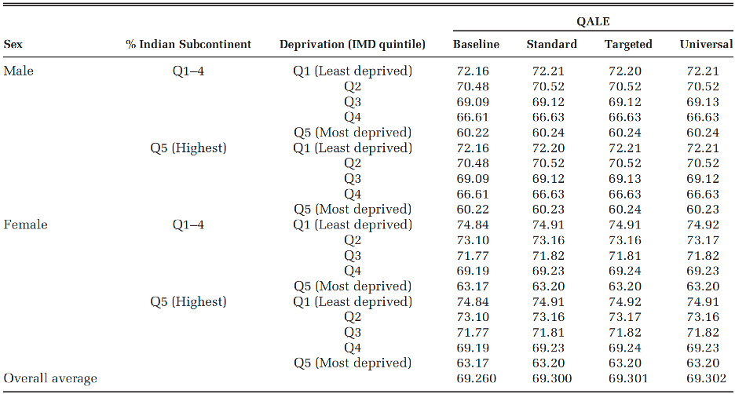Fairness-adjusted health distributions
Equity analysis should focus on variation in health deemed unfair by social value judgement
May view some unequal outcomes as “fair” and others as “inequities”
Can collapse subgroups together along dimension that isn’t of equity concern before evaluating social distribution of health
Identify dominated interventions
Interventions should only remain if they maximize benefit in at least one subgroup
Can also apply more complex dominance rules
In our example, “no screening” and “standard screening” are strictly dominated by “Universal screening”
Analyze trade-offs using social welfare indices
Can calculate equally distributed equivalent level of health
Difference between mean health in distribution and EDE represents amount of health we will sacrifice to achieve full equality
Can consider absolute inequality (Atkinson) or relative inequality (Kolm)
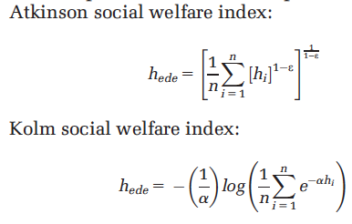
Preferred intervention by welfare index
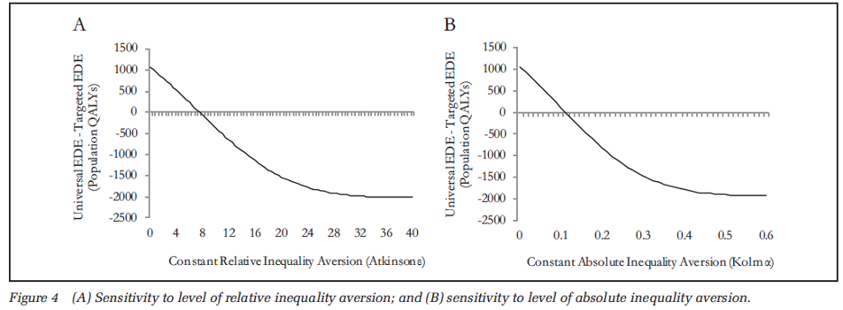For low inequality aversion levels, we prefer universal reminders. For higher inequality aversion, we prefer targeted reminders
Sensitivity analysis: who ‘pays’ opportunity cost?
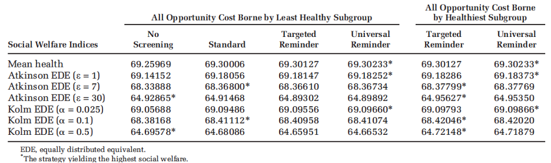Recap
Equity considerations increasingly considered in health technology assessment and decision-analytic modeling studies
Comprehensive equity analysis possible with right data and methods, but challenging
Many frameworks exist, but no consensus on optimal equity-efficiency trade-off
Logistics
Assignment 4 due Friday, Nov 3
Assignment 5 due Friday, Nov 17